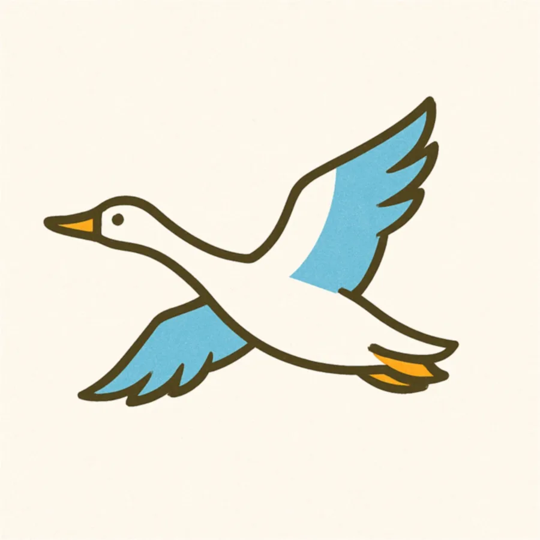
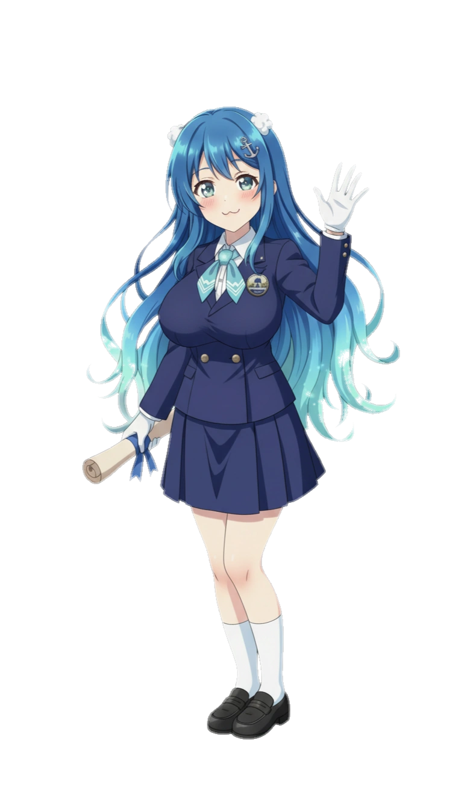

상징물 (휘장 및 슬로건)
효빈광역시 심벌마크 (휘장)
항만 무역의 중심, 밝은 미래를 여는 효빈
효빈광역시의 심벌마크(휘장)는 도시의 이름인 '효빈'의 한글 초성을 감각적으로 시각화함과 동시에, 3면이 바다와 접해 있는 동북아 항만 무역 중심지로서의 지리적 특성을 유기적으로 결합한 디자인입니다.
포용과 글로벌 네트워크
심벌마크 전체를 감싸고 있는 푸른색 형상은 '효'의 초성인 'ㅎ'을 형상화한 것입니다. 이는 맑은 바다의 색채를 띰과 동시에, 세계로 뻗어나가는 철도 및 해양 네트워크망과 시민을 따뜻하게 안아주는 포용적 시정을 의미합니다.
밝고 희망찬 시민의 미래
중앙에 굳건히 자리 잡은 노란색(주황색) 형상은 '빈'의 초성인 'ㅂ'을 나타냅니다. 따뜻한 태양과 금빛 에너지를 연상시키는 이 색상은 300만 효빈 시민이 함께 창조해 나갈 눈부시고 희망찬 미래의 발전을 상징합니다.
해양 도시의 역동성
하단에 배치된 두 줄기의 부드러운 물결무늬는 바다와 인접한 해양 도시로서의 정체성을 보여줍니다. 끊임없이 넘실대는 파도처럼 무한한 성장 동력과 융복합 문화의 역동성을 시각적으로 표현했습니다.
전용 색상 (Color System)
Hyobin Blue
#0070B8
Hyobin Yellow
#F59A23
시정 슬로건
"모두의 밝은 미래, 함께 열어가는 효빈"
민선 8기 출범과 함께 새롭게 제정된 시정 슬로건입니다. '나 하나'가 아닌 '시민 모두'가 주역이 되어 참여하고 소통함으로써, 특정 계층의 이익이 아닌 300만 효빈 시민 전체의 긍정적이고 희망찬 내일을 공동으로 창조해 나가겠다는 박효빈 시장의 확고한 행정 철학과 시민 연대의 가치를 담고 있습니다.
공식 마스코트 및 소통캐릭터

히버히 (Hibeohi)
효빈광역시의 시조(市鳥)인 '기러기'를 친근하고 귀엽게 형상화한 공식 마스코트입니다. 무리 지어 하늘을 나는 기러기의 특성처럼, 시민 간의 따뜻한 화합과 시정의 포용력을 알리는 역할을 수행합니다.

한바다 (Hanbada)
푸른 바다와 미래를 품은 효빈광역시 대변인실 명예 홍보대사입니다. 단정한 공무원 제복을 입고 온·오프라인을 넘나들며 시민들과 가장 가까이에서 소통하는 감성 행정의 진정한 마스코트입니다.